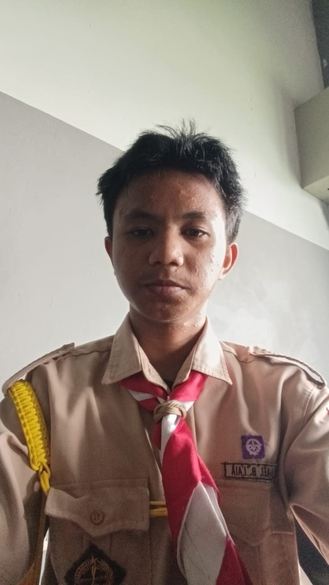

Jaringan & Infrastruktur
Perancangan dan troubleshooting jaringan lokal maupun antar-gedung dengan manajemen trafik yang efisien.
root@bnb-sec:~# _
Ethical Hacker, Network Engineer & Server Administrator dari SMK Bangun Nusa Bangsa. Berfokus pada perancangan infrastruktur jaringan tangguh, pengelolaan server Linux, serta pengujian keamanan sistem (penetration testing).

____ ____ __
/ __ \____ _/ __/___ ____ / / Nama : Rafael
/ /_/ / __ `/ /_/ __ `/ _ \/ / Sekolah : SMK Bangun Nusa Bangsa
/ _, _/ /_/ / __/ /_/ / __/ / Spesialis : Jaringan, Server & Ethical Hacking
/_/ |_|\__,_/_/ \__,_/\___/_/ OS : Kali Linux / Ubuntu Server
Shell : zsh / bash
Misi : Mengamankan & Mengoptimalkan InfrastrukturSebagai siswa di SMK Bangun Nusa Bangsa, saya mendalami dunia teknologi informasi secara menyeluruh—mulai dari merancang topologi jaringan skala lab hingga dunia nyata, mengonfigurasi server produksi berbasis Linux, hingga melakukan analisis kerentanan dan peretasan etis.
Saya percaya bahwa keamanan siber yang kuat berawal dari pemahaman mendalam tentang bagaimana jaringan dan server bekerja di balik layar.
Kombinasi kemampuan teknis di bidang infrastruktur jaringan, administrasi server, dan keamanan siber.
Perancangan dan troubleshooting jaringan lokal maupun antar-gedung dengan manajemen trafik yang efisien.
Deployment, monitoring, dan pengamanan server Linux untuk kebutuhan layanan web, database, dan DNS.
Pengujian penetrasi (pentest), pemindaian celah keamanan, serta mitigasi serangan siber pada sistem.
Pembuatan skrip otomatis untuk backup server, pemantauan log jaringan, dan utilitas keamanan.
Merancang pemisahan jaringan guru, siswa, dan server menggunakan VLAN serta aturan firewall berlapis untuk mencegah akses tidak sah.
Membangun server Ubuntu dengan Nginx reverse proxy, SSL/TLS, Fail2Ban, dan autentikasi SSH berbasis kunci.
Melakukan pemetaan port, analisis paket dengan Wireshark, dan penyusunan laporan perbaikan celah keamanan pada sistem uji.
Ketik perintah seperti help, whoami, skills, school, atau clear.
Terbuka untuk kolaborasi proyek jaringan, administrasi server, kompetisi CTF, dan diskusi keamanan siber di lingkungan SMK Bangun Nusa Bangsa maupun komunitas IT.